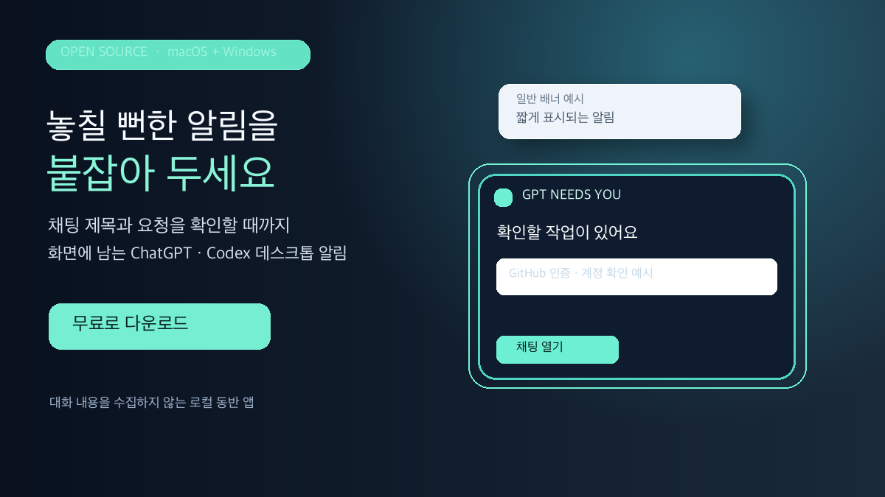

채팅으로 바로 이동
유효한 ChatGPT 대화 URL이 전달되면 알림 카드의 제목·본문·빈 영역을 눌러 해당 채팅으로 이동할 수 있습니다. 소리와 확인 버튼은 각각 원래 동작을 유지합니다.
ChatGPT·Codex 작업이 사용자의 확인을 기다릴 때, 대화 제목과 해야 할 일을 화면에 남는 카드로 보여줍니다. 카드에서 해당 대화로 돌아갈 수 있습니다.

유효한 ChatGPT 대화 URL이 전달되면 알림 카드의 제목·본문·빈 영역을 눌러 해당 채팅으로 이동할 수 있습니다. 소리와 확인 버튼은 각각 원래 동작을 유지합니다.
떠 있는 카드에 채팅 제목과 필요한 작업을 표시합니다. 사용자가 카드에서 확인하기 전까지 카드는 유지됩니다.
카드는 불투명하게 표시되고, 연속 알림은 계단식으로 놓여 먼저 온 창도 확인할 수 있습니다.
알림이 키보드 포커스를 빼앗지 않고, 타이핑이나 Enter 키로 사라지지 않습니다. 확인 버튼을 눌러 닫습니다.
창을 먼저 표시한 뒤 알림음을 재생합니다. X는 현재 창만 닫고, 카드 본문은 해당 대화로 이동합니다.
버튼 한 번으로 새 알림을 24시간 멈출 수 있습니다. 이미 열린 알림은 각각 직접 닫을 수 있습니다.
카드 또는 명령줄에서 소리를 켜고 끌 수 있습니다. 소리가 꺼져 있어도 카드 알림은 표시됩니다.
macOS와 Windows에서 WAV 파일을 알림음으로 선택하고, 언제든 기본 시스템 소리로 되돌릴 수 있습니다.
알림 제목과 요청에서 주제가 일치하면 한 달에 한 번 작은 서비스 추천을 표시합니다. 분류는 기기 안에서 처리하며 추천 AI 토큰을 쓰지 않습니다. 원문은 저장·전송하지 않고 주제와 날짜만 로컬에 기록합니다. 인증 관련 알림은 제외하며 기능을 끌 수 있습니다.
설치한 도우미는 알림 제목과 내용을 분석 서버로 보내지 않습니다. 공개 저장소의 코드를 확인하고 수정할 수 있습니다.
./install-macos.sh, Windows PowerShell은 ./Install-Windows.ps1을 실행해 네이티브 알림 도우미를 설치합니다.웹 브라우저만으로는 컴퓨터에 네이티브 알림을 표시할 수 없습니다. 플러그인과 운영체제 도우미를 함께 설치해야 합니다.
알림음을 바꾸려면 macOS에서 ~/.local/bin/chatgpt-attention-alert --sound-file /경로/소리.wav, Windows에서 alert.ps1 -SetSoundFile "C:\Sounds\alert.wav"를 실행하세요. 기본음으로 돌아가려면 각 명령에 default를 지정합니다.
플러그인은 에이전트에 알림 도우미 사용법을 제공합니다. 실제 소리와 화면 카드는 컴퓨터에 설치한 macOS 또는 Windows 동반 프로그램이 표시합니다. 따라서 ChatGPT 웹사이트만 열어 둔 환경에서는 컴퓨터 알림을 직접 띄울 수 없습니다. 현재 배포는 GitHub 오픈소스 패키지이며 OpenAI의 공개 플러그인 디렉터리 등록을 의미하지 않습니다.
알림에서 특정 채팅으로 이동하려면 호출하는 쪽에서 그 채팅의 제목과 URL을 제공해야 합니다. URL이 없거나 지원 도메인의 URL이 아니면 소리를 재생하지 않으며 채팅 열기 동작도 제공하지 않습니다.
A free, open-source desktop companion that tells you which ChatGPT or Codex conversation needs attention. Alerts stay visible while you type, stack in arrival order, and can open the supplied conversation when clicked.
Download the latest macOS and Windows ZIP: GitHub Releases. Add the local plugin marketplace in ChatGPT desktop or Codex, install the plugin, then run install-macos.sh or Install-Windows.ps1. Copy the full platform-specific steps from the README.
Once a month, a small developer-service recommendation may appear when the alert topic matches. Matching happens locally without an AI request or recommendation tokens. Only topic labels and dates stay on the device; alert text is not saved or sent. Authentication alerts are excluded, and recommendations can be disabled.
Both the plugin and the operating-system companion are required. Browser-only ChatGPT cannot display native desktop alerts. Alert content stays on your device.